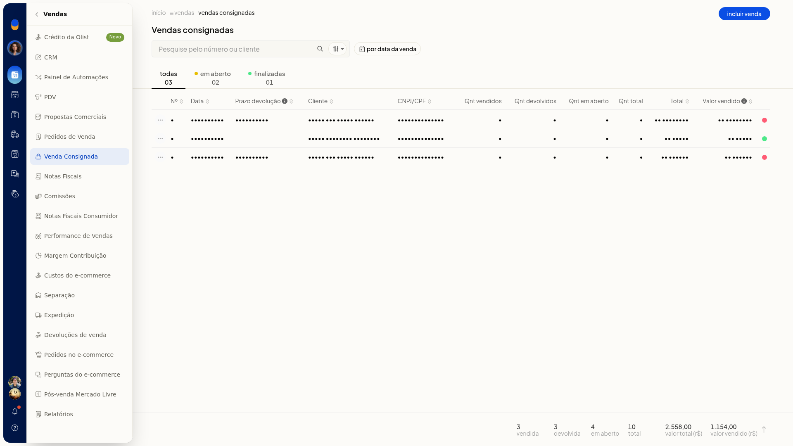
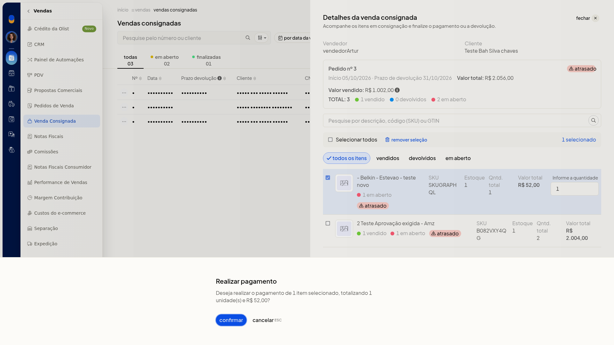

PDV: venda consignada
Em Vendas > Venda Consignada você lista as vendas consignadas, inclui uma nova venda e abre as confirmações de pagamento e de devolução de itens.
A lista traz busca por número ou cliente, filtro por data da venda e as abas Todas, Em aberto e Finalizadas, cada uma com a contagem.
Importante
- Para Realizar pagamento ou Devolver, selecione ao menos um item. Sem seleção, a tela mostra Selecione ao menos um item.
Instruções
-
Acesse Vendas > Venda Consignada.
-
Consulte a lista pela busca, pelo filtro de data da venda ou pelas abas Todas, Em aberto e Finalizadas.

-
Clique em incluir venda.
-
Preencha os campos, que não são obrigatórios: Número, Data, Prazo, Cliente, Vendedor, Depósito, item, SKU, quantidade, Preço un e observações. Em Data e Prazo, informe a data. Em Preço un, use preço com quatro casas, como 25,0000.
-
No detalhe da venda, marque ao menos um item e clique em Realizar pagamento. A confirmação resume a quantidade e o valor do item selecionado.

-
Para devolver, marque o item e a quantidade e clique em Devolver. A confirmação Devolver itens mostra o item e a quantidade selecionados. Cancelar (ESC) fecha a confirmação sem devolver.
Resultado
A venda consignada fica disponível na lista para consulta e pronta para incluir, receber o pagamento ou devolver itens. As abas Todas, Em aberto e Finalizadas separam as vendas e mostram a contagem de cada situação.